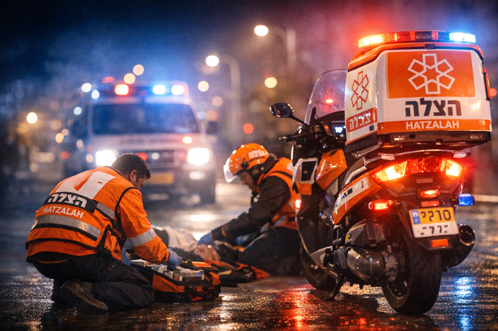

United Hatzalah France au Salon du mariage Alloj
Nos équipes ont participé au Salon du mariage organisé par Alloj. Une nouvelle occasion de faire connaître notre mission, de rencontrer la communauté et de sensibiliser à l’engagement des secouristes bénévoles. Merci à Eric Hassoun et à l’équipe Alloj pour leur accueil.
Découvrir notre mission